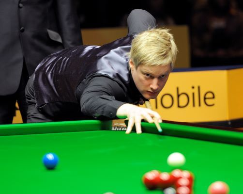
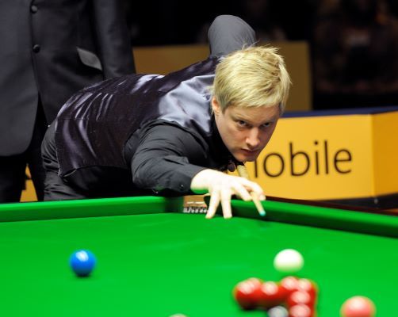
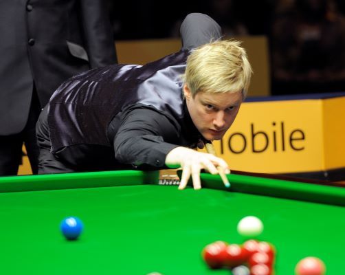

To be honest, I have never played snooker. The reason is that snooker don't have market in America while billiards is so much popular than snooker. I cannot find any billiards club that has snooker table.
Compare to billiards, snooker is more elegant and reflects nobility of English people. I didn't know billiards and snooker at all until I came to UW-Eau Claire. There are 6 pool tables in Hilltop Center. As a BluGold, I have free access to these facilities. Then I started to play without any knowledge of billiards in the beginning of 2019. I fell in love with this sport immediatelly and kept practicing almost every day. Then I knew snooker. After watching professional snooker tournaments and all kinds of excellent shots, I was amazed by their skills and enjoyed the visual feast. I also lerned a lot from them. I can play top spin and back spin now. I record several video clips to show my work. Although snooker table and billiards are different, potting skills are the same.
